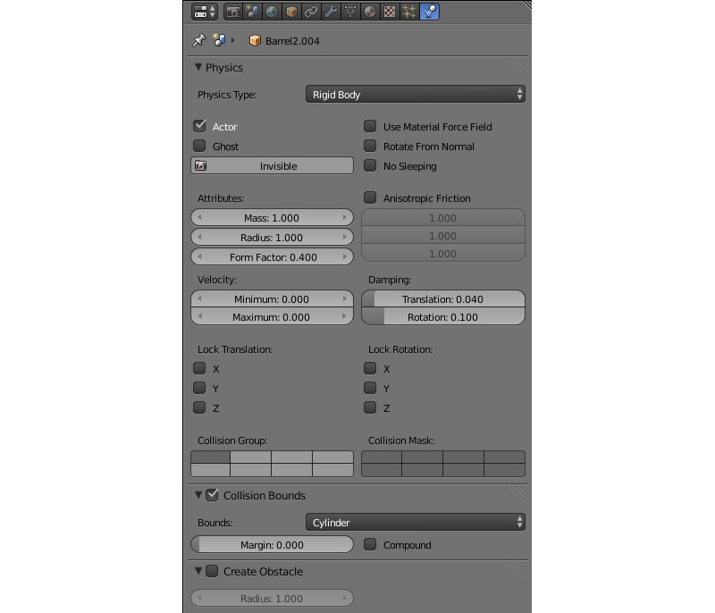

Физика¶
Подготовка к использованию¶
Физическая подсистема реализована в модуле uranium.js и загружается отдельно от основного кода движка. Модуль uranium.js представляет собой модификацию физического движка Bullet, портированную для работы в браузерах. Подключение физической подсистемы и указание пути загрузки модуля uranium.js осуществляется приложениями посредством внешнего API:
b4w.config.set("physics_enabled", true);
b4w.config.set("physics_uranium_path", "../../external/deploy/apps/common/uranium.js");
Для задействования физики на сцене необходимо установить флаг Enable physics в вкладке сцены в Blender’е.

Настройка физических параметров производится в режиме Blender Game.

Статический тип физики¶
Может использоваться как ограничитель движения других объектов, например, для определения столкновений с ландшафтом, стенами и т.д. В настройках физики такого объекта для опции Physics Type должно быть выбрано значение Static (значение по умолчанию).

Меш может быть покрыт одним или несколькими физическими материалами. Во вкладке Material должна быть включена опция Blend4Web > Special: Collision. Также во вкладке Material на панели Physics (в режиме Blender Game) располагаются физические настройки материала. Поддерживаются следующие физические настройки материала: трение (Friction), упругость (Elasticity).

Поле Collision ID предназначено для определения столкновения со специфическим материалом, и может быть оставлено пустым. Пример использования Collision ID - определение нахождения игрового персонажа на разных типах покрытия ландшафта - трава, песок, деревянное покрытие и т.д.
Опция Ghost исключает материал из физических взаимодействий, но сообщает приложению о контакте с ним. Пример - определение, что игровой персонаж находится на вертикальной лестнице.

Поле Collision group отвечает за физическую группу, к которой относится материал. Поле Collision mask определяет все физические группы, с которыми будет взаимодействовать данный материал.
Динамический тип физики¶
Предназначен для симуляции движения жесткого тела.

В настройках физики такого объекта для опции Physics Type может быть выбрано значение Rigid Body (с вращениями) или Dynamic (без вращений). В настройках Collision Bounds может быть выбран тип коллайдера, поддерживаются: Box, Capsule, Sphere, Cylinder, Cone. Другие поддерживаемые настройки: масса (Mass), демпфирование (Damping) - для перемещения (Translation) и вращения (Rotation).
Поле Collision group отвечает за физическую группу, к которой относится объект.
Поле Collision mask определяет все физические группы, с которыми будет взаимодействовать данный объект.
{kind=link}
В настройках панели физики объекта должен быть установлен флаг Detect collisions. Поле Collision ID предназначено для определения столкновения со специфическим объектом (например, прикрепленный к камере объект для определения близости FPS персонажа к предметам), и может быть оставлено пустым.

Для материала такого объекта поддерживаются: трение (Friction), упругость (Elasticity). В случае использования на одном меше нескольких материалов физические настройки считываются с первого из них.
Для объекта-камеры должна использоваться настройка Physics Type = Dynamic, должен быть установлен флаг Detect collisions.
Ограничители (Constraints)¶
Физические ограничители используются для уменьшения числа степеней свободы объектов.

Установка физического ограничителя (Rigid Body Joint) на объект происходит в панели Object Constraints. Поддерживаемые типы (Pivot Type): Ball, Hinge, Cone Twist, Generic 6 DoF. Физический ограничитель можно установить на один из двух взаимодействующих объектов, при этом другой выступает в качестве цели (Target). Оба объекта могут быть со статическим и/или динамическим типом физики. В ограничителях (кроме Ball) могут настраиваться пределы перемещения и вращения.

Колесные транспортные средства¶
Модель транспортного средства (ТС) должна состоять из 6 отдельных объектов - шасси, 4 колеса, рулевое колесо. Центр меша шасси должен соответствовать центру масс. Центры мешей колес и рулевого колеса должны располагаться на осях вращения. Рулевое колесо должно быть ориентировано в локальной системе координат: X - ось вращения, Y - вправо, Z - вверх. Объекты могут иметь любые названия.

На всех 6 объектах нужно выставить Vehicle part, указать один и тот же идентификатор в поле Vehicle name, выбрать соответствующий тип объекта - Chassis, Steering wheel, Back right wheel и т.д. Для колес имеется также настройка компенсирующего хода подвески Suspension rest length.
Для шасси необходимо указать реалистичную массу (т.к. значение по умолчанию 1 кг). Для этого перейти в настройки физики, для опции Physics Type выбрать значение Rigid Body, и выставить нужное значение (например, 1000 кг) в поле Mass.
Параметры настройки для шасси¶
- Vehicle Settings > Force max
- Максимальная движущая сила транспортного средства
- Vehicle Settings > Brake max
- Максимальный коэффициент торможения
- Vehicle Settings > Suspension compression
- Коэффициент демпфирования при растяжении подвески
- Vehicle Settings > Suspension stiffness
- Коэффициент жесткости подвески
- Vehicle Settings > Suspension damping
- Коэффициент амортизации подвески
- Vehicle Settings > Wheel friction
- Константа трения колес о поверхность. Для реалистичных Т.С. должен быть в районе 0.8. Но может быть значительно увеличен, для улучшения управляемости (1000 и более)
- Vehicle Settings > Roll influence
- Снижает вращающий момент от колес, уменьшая вероятность переворота транспортного средства (0 - нет вращающего момента, 1 - реальное физическое поведение).
- Vehicle Settings > Max suspension travel cm
- Максимальный ход подвески в сантиметрах
Для рулевого колеса(Steering wheel) необходимо указать максимальный угол поворота(Steering max) и передаточное отношение угла поворота руля к передним колесам (Steering ratio). Максимальное значение угла поворота указывается в оборотах. Один оборот равен 360 градусам. Таким образом, поставив Steering max равным единице, а Steering ratio равным 10, максимальный поворот руля получится равным 360 градусам, а максимальный поворот передних колес 36 градусов.
На этом этапе можно произвести экспорт и загрузить сцену в движок. Рекомендуется создать дорожную поверхность с физическим материалом. В просмотрщике нажать клавишу Q для выбора контролируемого объекта, и выбрать шасси. Использовать W, A, S, D для управления.
Дополнительно можно настроить демпфирование Damping перемещения (Translation) и вращения (Rotation). Свойство влияет на скорость перемещения и инерционность ТС.
Настройка трения и эластичности физического материала дорожного покрытия не влияют на поведение ТС.
Плавающие объекты¶

Для того, чтобы объект мог плавать на поверхности воды (объекта с материалом Special water), необходимо выставить свойство Floating. Существует два типа частей плавающего объекта: Main body - непосредственно сам плавающий объект и Bob - вспомогательный объект-поплавок, на который будет действовать выталкивающая из воды сила. Плавающий объект может иметь неограниченное количество объектов типа Bob. В качестве поплавков могут использоваться как меши, так и объекты типа Empty.
Всем объектам, входящим в состав одного плавающего объекта необходимо выставить одинаковое имя в поле Floater name
Параметры настройки плавающего объекта¶
- Floating settings > Floating factor
- Коэффициент выталкивания объекта из воды
- Floating settings > Water linear damping
- Демпфирование линейной скорости при нахождении объекта на поверхности воды (или под водой). Когда объект находится вне воды, используется значение из настроек физики.
- Floating settings > Water rotation damping
- Демпфирование вращения при нахождении объекта на поверхности воды (или под водой). Когда объект находится вне воды, используется значение из настроек физики.
Плавающие транспортные средства¶

Плавающие транспортные средства используют часть параметров из настроек Vehicle settings и все настройки аналогичные Floating settings. На основном объекте необходимо выставить Vehicle part, типа Hull. Так же как и плавающий объект плавающее транспортное средство требует наличия вспомогательных объектов типа Bob.
Параметры настройки плавающего транспортного средства¶
- Vehicle Settings > Force max
- Максимальная движущая сила транспортного средства
- Vehicle Settings > Brake max
- Максимальный коэффициент торможения
- Floating settings > Floating factor
- Коэффициент выталкивания объекта из воды
- Floating settings > Water linear damping
- Демпфирование линейной скорости при нахождении объекта на поверхности воды (или под водой). Когда объект находится вне воды, используется значение из настроек физики.
- Floating settings > Water rotation damping
- Демпфирование вращения при нахождении объекта на поверхности воды (или под водой). Когда объект находится вне воды, используется значение из настроек физики.